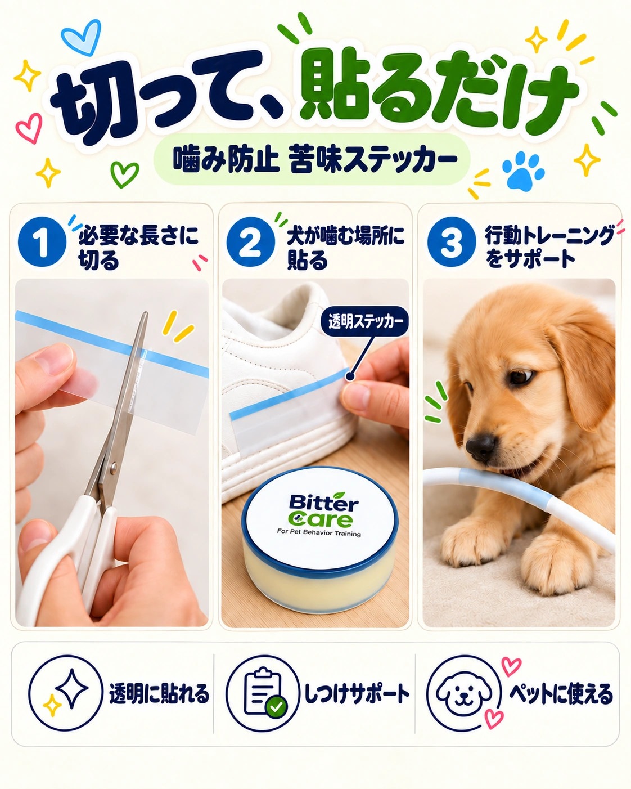
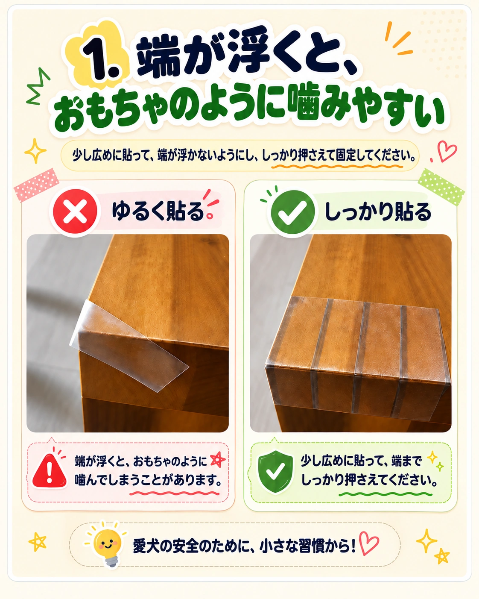
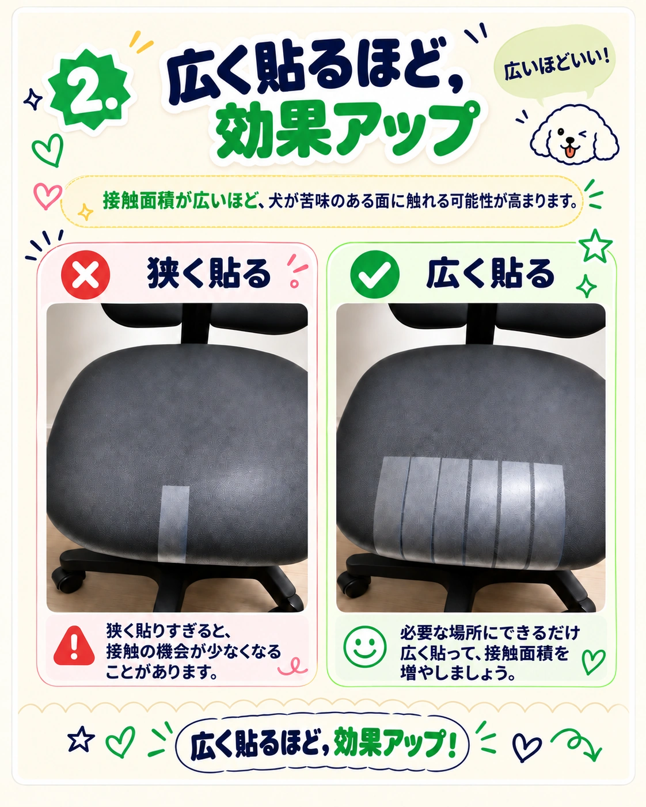
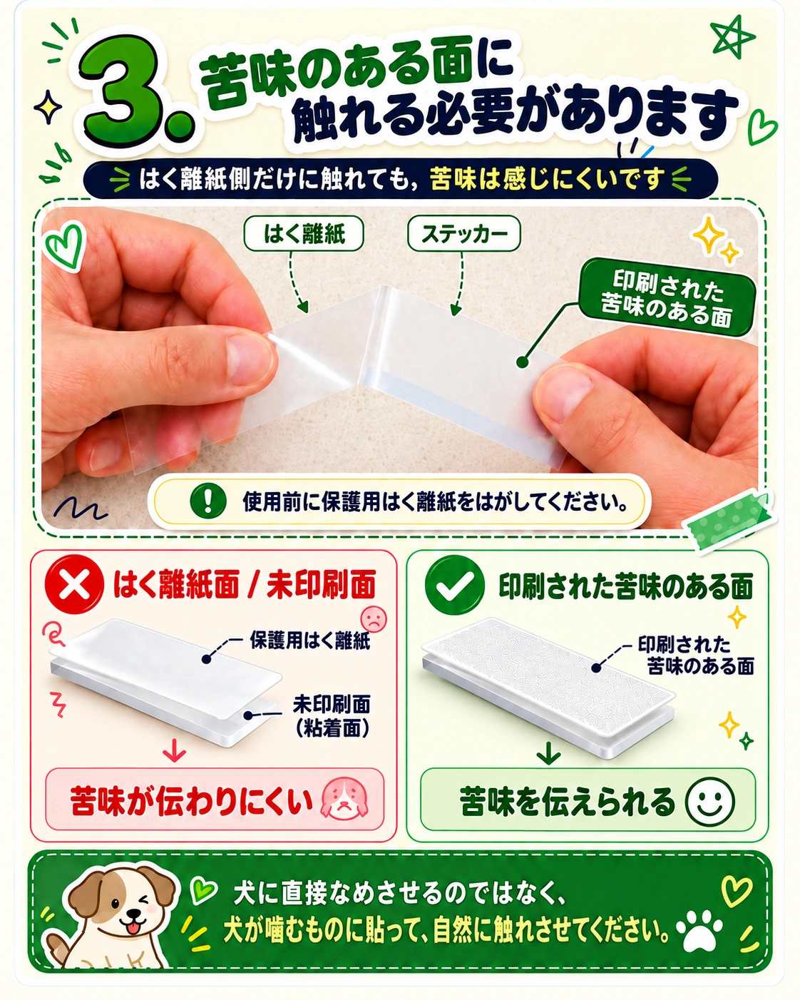
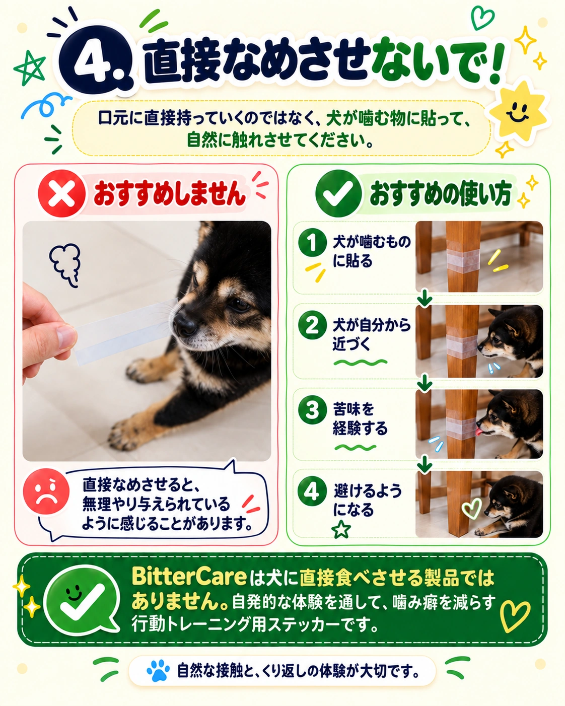
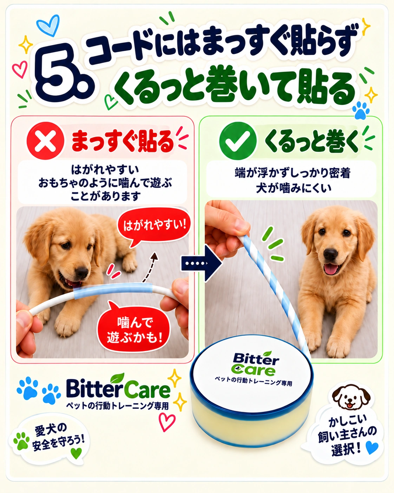

Usage guideビターケア、
ビターケア、
こうして使います。
口が触れる範囲より少し広めに、端まで密着。貼る位置と密着状態が大切です。

初めて貼る日の4ステップ。
拭く、切る、貼る、観察する。順番に進めましょう。
1
表面を清掃
接着のためにほこりや油分を取り、完全に乾かしてください。
2
必要なサイズに切る
実際に噛む範囲より少し広めに切ります。
3
正しい位置に貼る
はく離紙をはがし、実際に口が触れる位置に浮かないよう密着させます。
4
反応を観察
初めの数日は反応を見て位置を調整し、必要なら交換してください。
はく離紙がはがれにくいとき。
写真で分け方を確認してください。刃物は平らな作業台で使い、手や製品を傷つけないよう注意してください。

Step 01
必要な長さに切る
貼る場所より少し広めに切ると、きれいに仕上がります。

Step 02
表面に浅く切り込み
分けたい部分にごく浅い切り込みを入れます。製品を貫通させず、手に持ったまま切らないでください。

Step 03
ゆっくり開いて分離
切り込み部分から、両手でやさしく開いて分けます。
実践のポイントは五つ。
使用前に位置・範囲・密着を確認しましょう。

01
浮きなく密着

02
必要な場所を広めに

03
印刷された苦味面を確認

04
直接なめさせない

05
コードには短く巻く
画像を押すと拡大できます。スマートフォンでは横にスワイプして五つのガイドをご覧ください。
絶縁・感電防止製品ではありません。傷んだコードには使用せず、電源を抜いてから貼ってください。
反応は犬によって異なります。
苦味への感度、噛む習慣、接触位置、環境で反応は変わります。ビターケアは行動ケアの補助製品です。初めは観察しながら位置を調整してください。
貼る場所を、
まず確認しましょう。
家具・ドア枠・コード保護箇所など、実際に口が触れる生活面に貼ることが大切です。
HERE FOR YOU
問い合わせる ↗困ったときも、一緒に考えます。
貼る場所から製品についてのご質問まで。内容を確認後、メールでお返事します。